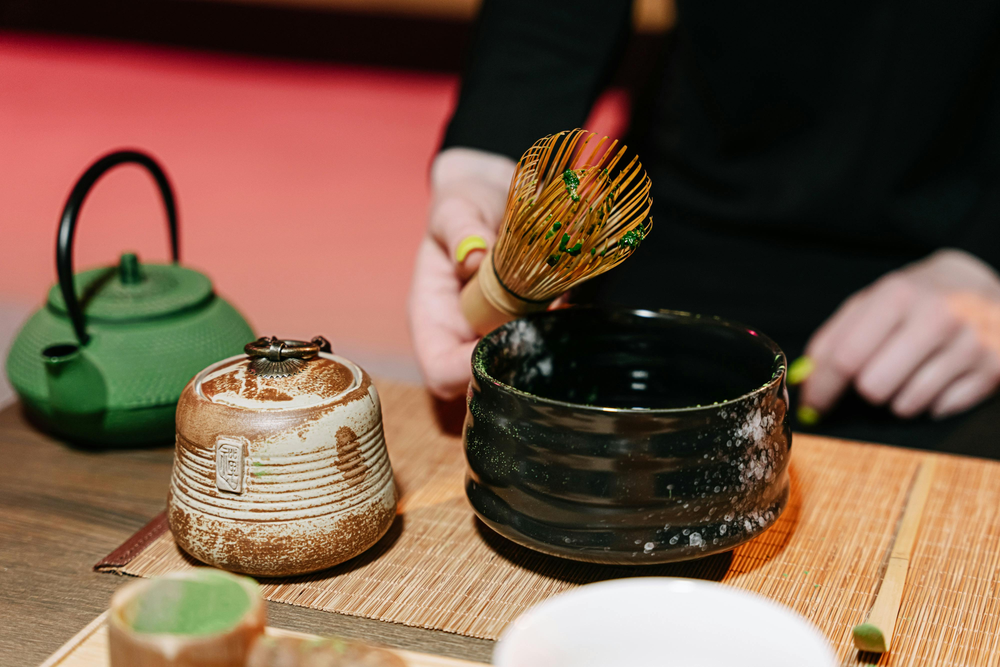

KyoMatcha
KyoMatcha adalah website yang membahas perkembangan Matcha dari Kyoto yang awalnya untuk tradisi upacara hingga gaya hidup modern.

SEJARAH MATCHA
Tradisi dari Kyoto sejak abad ke-12, Matcha hadir dari upacara teh hingga jadi gaya hidup modern.
MANFAAT MATCHA
Kaya antioksidan, meningkatkan fokus, memberi energi alami tanpa jitter.
VARIASI DAN INOVASI
Dari teh tradisional hingga Latte, Dessert, dan kuliner modern
Sejarah Matcha
Matcha memiliki sejarah panjang lebih dari ribuan tahun. Awalnya, tradisi meminum teh bubuk berkembang di Tiongkok pada zaman Dinasti Song. Bubuk teh digunakan oleh para biksu untuk meditasi karena memberikan efek ketenangan dan fokus mental.
Pada abad ke-12, seorang biksu Jepang bernama Eisai membawa tradisi ini ke Jepang. Di Kyoto, budaya Matcha berkembang menjadi ritual formal bernama Chanoyu atau upacara minum teh, di mana Matcha dianggap simbol keharmonisan, ketenangan, dan penghormatan. Seiring waktu, Matcha menjadi bagian penting dari budaya Jepang dan dikonsumsi bukan hanya untuk ritual, tetapi juga sebagai minuman harian.
Masuk ke era modern, Matcha dikenal sebagai superfood dan menjadi tren global berkat kandungan nutrisinya yang sangat tinggi. Kini, Matcha tidak hanya identik dengan Jepang, tetapi juga menjadi ikon gaya hidup sehat di seluruh dunia.
Manfaat Matcha

Salah satu alasan Matcha menjadi populer adalah kandungan antioksidan yang sangat tinggi, terutama EGCG (Epigallocatechin Gallate) yang berfungsi melawan radikal bebas dan membantu menjaga kesehatan sel-sel tubuh. Matcha mengandung antioksidan hingga 137 kali lebih tinggi dibandingkan teh hijau biasa.
Matcha juga mengandung kombinasi unik antara L-theanine dan kafein. L-theanine membantu menenangkan pikiran, sementara kafein memberikan energi stabil tanpa rasa gugup seperti minuman berkafein pada umumnya. Efeknya adalah fokus tinggi namun tetap tenang—alasan kenapa biksu mengonsumsi Matcha sebelum meditasi.
Selain itu, Matcha mendukung kesehatan jantung, membantu meningkatkan metabolisme, dan dapat membantu proses detoks karena diproses dari daun teh utuh yang digiling halus.
Variasi & Inovasi Matcha

Perkembangan tren kuliner membawa Matcha menjadi bahan favorit di banyak negara. Tidak hanya sebagai minuman panas, kini Matcha hadir dalam berbagai bentuk inovasi. Mulai dari Matcha Latte, Matcha Milk Foam, Matcha Espresso Fusion, hingga minuman dingin kekinian.
Di dunia dessert, Matcha banyak digunakan untuk cake, cookies, croissant, tiramisu, ice cream, dan bahkan mochi. Restauran premium bahkan menggabungkan Matcha ke dalam saus, pasta, dan menu fusion lainnya.
Selain kuliner, Matcha juga menjadi bahan utama di dunia kecantikan karena antioksidan tingginya. Banyak produk skincare seperti masker wajah, scrub, dan toner yang menggunakan Matcha sebagai bahan alami.